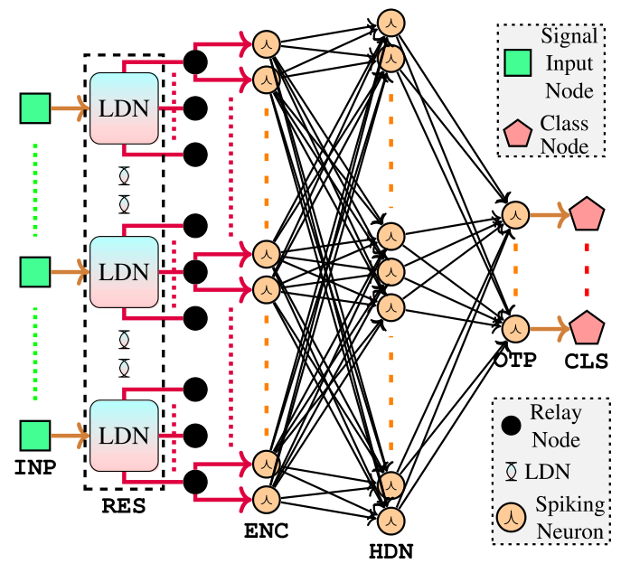
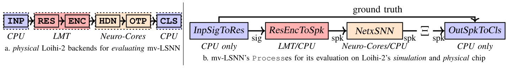
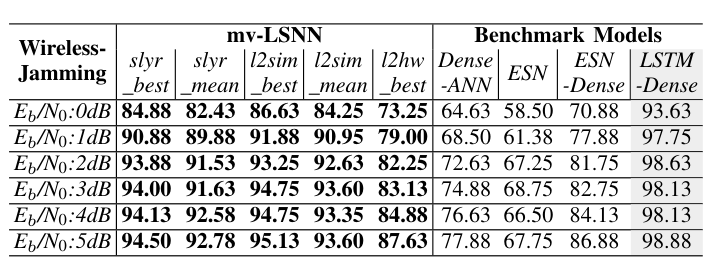

Legendre-SNN on Loihi-2
Spiking neural networks are rarely deployed end-to-end on neuromorphic chips, because their non-spiking parts usually stay on an off-chip CPU. This work runs a multivariate reservoir-based Legendre-SNN entirely on Intel Loihi-2, placing the non-spiking reservoir on the on-chip Lakemont core, and evaluates it on 24 time-series datasets including a new 5G pilot-jamming detection set.
Design
mv-LSNN model
Each of the K input dimensions feeds its own Legendre Delay Network (LDN), a fixed linear reservoir that produces a d-dimensional temporal feature vector. The features are rate-encoded by 2Kd integrate-and-fire neurons, followed by a trainable spiking hidden layer (3Kd CUBA neurons) and c output neurons; the class is the most active output neuron.
Quantization for Loihi-2
The LDN matrices, states and inputs are scaled by P = 4096 and rounded, so the reservoir and encoder run with 32-bit integer operations. The hidden and output layers are rebuilt with Loihi-2's CUBA neurons.
On-chip mapping with Lava
The model is split into four Lava Processes. The reservoir and encoder run as C code on a Lakemont (LMT) x86 core, the spiking layers on Neuro-Cores, and only the input feed and class readout stay on the host CPU. The paper documents how to program the LMT core, which has little official documentation.
Training and evaluation flow
The spiking layers are trained on CPU/GPU with lava-dl (SLAYER, spike-rate loss, Adam) and converted with netx. Accuracy is reported on CPU/GPU, on the Loihi-2 simulator and on the physical Kapoho Point board.
5G WirelessJamming dataset
A 2x2 MIMO 5G NR link over a CDL channel is simulated, with a jammer that corrupts only the pilot symbols at jammer Eb/N0 from 0 to 5 dB. The released dataset has 1000 clean and 1000 jammed signals of 1016 time steps each, split 60/40 into train and test.


Results
- On 23 TSC datasets, mv-LSNN on physical Loihi-2 beats LSTM-FCN (on GPU) on 7; on CPU/GPU or the Loihi-2 simulator it beats it on at least 8.
- Jamming detection on physical Loihi-2 reaches 73.25% (0 dB) to 87.63% (5 dB), above the ESN-Dense baseline (70.88% to 86.88%); on CPU/GPU mv-LSNN reaches up to 94.50%.
- Per-sample energy for jamming detection: 16.87 mJ for mv-LSNN on Loihi-2 vs 4030.05 mJ (Dense-ANN), 9126.34 mJ (ESN), 10907.09 mJ (ESN-Dense) and 2037.87 mJ (LSTM-Dense) on an Intel Xeon W-2225 CPU.
- That is more than 200x less energy than Dense-ANN, more than 500x less than ESN and ESN-Dense, and more than 100x less than LSTM-Dense, with 14112 trainable parameters.
- LSTM-Dense remains more accurate (93.63% to 98.88%); higher LDN orders close the gap, but beyond order 12 a 4-dimensional input exceeds the LMT core memory.
